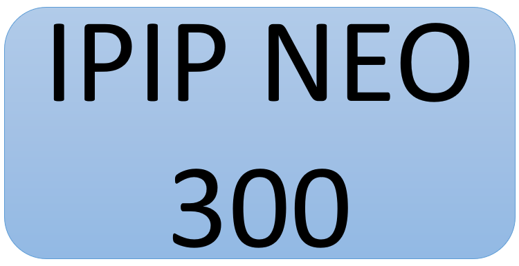

L’International Personality Item Pool (IPIP) propose un questionnaire de personnalité basé sur le modèle en cinq facteurs appelé IPIP NEO 300. La version originale a été créée en langue anglaise et il existe une traduction en français canadien. Notre étude propose une adaptation en français européen pour ce questionnaire. Parmi les 300 items, 26 items ont été considérés comme potentiellement problématiques et ont été soumis à des étudiants de langue maternelle française en dernière année de master en traduction (N = 20). Nous avons retenu les traductions les plus majoritaires afin de proposer une version française adaptée à la population francophone européenne.

Dans le domaine de l’investigation psychométrique de la personnalité, Goldberg (1999) souligne que la plupart des instruments évaluant la personnalité appartiennent à un auteur ou à un éditeur et que les items sont protégés par le copyright, ce qui empêche les scientifiques de les utiliser gratuitement ou de les modifier. Cela réduit par exemple les possibilités de comparer deux instruments entre eux pour mesurer leur validité et leur performance. De plus, il souligne que les recherches scientifiques sont alors soumises aux intérêts commerciaux. Il a donc entrepris de développer et de continuellement affiner un large choix d’inventaires de personnalité en proposant le projet de l’International Personality Item Pool. L’IPIP présente de nombreux avantages selon Goldberg (1999). En effet, l’accès et l’utilisation sont gratuits et rapides grâce à son site internet. Il permet une certaine flexibilité car les utilisateurs peuvent administrer les items dans l’ordre qui leur convient et appliquer les modifications qu’ils désirent. De plus, il regroupe également un très grand nombre d’items qui permettent de développer des versions plus ou moins longues de différents tests (Goldberg et al. 2006). L’IPIP rassemble ainsi plus de 250 inventaires évaluant la personnalité dont l’IPIP NEO qui s’inspire du NEO-PI R (Costa, McCrae, et Rolland 1998).
L’IPIP NEO est donc une adaptation du NEO PI, dans le sens où il vise à mesurer les mêmes domaines et les mêmes facettes. Ainsi, à partir de 300 items, soit dix items par facette, l’IPIP NEO évalue les cinq domaines du Big Five :
Comme pour le NEO-PI R, il se base également sur six facettes par domaine, qui, pour certaines, n’ont pas exactement le même intitulé, quand bien même les définitions s’avèrent similaires. Une proposition de traduction pour les domaines et facettes en français est proposée ici.
L’IPIP NEO fait l’objet de traductions dans plus de dix langues, notamment en slovène (Musek s. d.) en japonais (Karlin s. d.) ou encore en français québécois (Gravel s. d.). Le site de l’IPIP NEO permet à n’importe qui de passer le test gratuitement et d’obtenir, à la fin, un résultat détaillé et des informations sur sa personnalité. Ainsi, plus de 500 000 personnes ont déjà passé ce test depuis qu’il a été diffusé sur internet. Comme pour le NEO-PI, il existe des versions courtes de l’IPIP NEO avec seulement 120 items par exemple. Cela permet de répondre plus rapidement (10-20 minutes versus 30-40 minutes) mais donne des résultats moins précis que la version 300 items. Ainsi, sur la page internet The IPIP NEO (International Personality Item Pool Representation of the NEO-PI-R), n’importe qui peut remplir le questionnaire pour avoir un feedback concernant sa personnalité, dans sa version anglaise.
La validité de l’IPIP NEO a été mesurée dans la première étude de Goldberg (1999) qui indique que celui-ci présentait un alpha moyen de .80, ce qui est plus élevé que l’alpha du NEO-PI R qui s’élève à .75. L’échelle a une corrélation moyenne de .94 avec le NEO PI R. L’IPIP NEO a déjà fait l’objet d’études confirmant sa validité interne (Lim et Ployhart 2006). De nombreuses études utilisant l’IPIP NEO ont montré son efficacité sur des sujets très différents : il a été utilisé pour des études traitant de l’anxiété et de la dépression (Lewis et al. 2010), des comportements de santé (Hagger-Johnson et Whiteman 2007) ou encore l’utilisation du téléphone (Siddiqui 2011) par exemple. De nombreuses études se sont appliquées à évaluer la validité de l’IPIP NEO et elles ont toutes conclu à sa robustesse et sa validité (Goldberg 1999; Maples et al. 2014; Rehman, Muellenbach, et Johnson 2020). Plus que la validation de l’IPIP NEO 300 items, sa version plus courte, comprenant 120 items, fait l’objet d’un très grand nombre d’études de validation. Ainsi, Kajonius et Johnson (2019), ont conclu à la robustesse de la structure factorielle de l’IPIP NEO 120 pour les utilisations futures.
L’IPIP NEO est donc très intéressant mais s’il a été traduit dans de nombreuses langues, il n’a cependant qu’une seule traduction française, réalisée au Québec (Gravel s. d.). Néanmoins, le français québécois est sensiblement différent du français européen et une mauvaise compréhension des énoncés pourrait poser problème dans l’interprétation et dans la structure même du questionnaire (Longley et al. 2017). En effet, d’après Verreault (s. d.), si le français québécois fait partie du tout qu’est le français, celui-ci est constitué de nombreuses variétés sociales et régionales. Ainsi, le français peut déjà être divisé en deux ; séparant le français européen du français américain. Le français européen étant constitué du français de France, de Belgique et de Suisse et le français américain étant constitué du français du Canada. D’autres divisions peuvent encore être effectuées au sein même de celles-ci, jusqu’à aller au patois d’un petit village breton, par exemple. C’est pourquoi, dans un souci de rigueur pour entreprendre l’utilisation de cette traduction en Europe, il a été décidé de fournir une adaptation en français européen, afin de diminuer les erreurs de compréhension et finalement de valider l’IPIP NEO français européen. L’objectif de notre étude est de nous baser sur la traduction déjà existante de Gravel (s. d.) disponible sur le site de l’IPIP NEO. Cette traduction a suivi les trois première étapes de la méthode de Vallerand (1989). Cette procédure incluait une première traduction en français, suivie d’une back-translation en anglais, qui devait correspondre avec la version originale. De ce fait, certains items ont été modifié jusqu’à trois fois pour correspondre au mieux et le pronom “Je” a dû être ajouté dans la version française. Notons que ce questionnaire a fait l’objet d’une traduction, mais jamais d’une validation à proprement parler.
Nous souhaitons proposer une adaptation française européenne de l’IPIP NEO.
En effet, nous constatons :
L’objectif de notre travail est de tenter de proposer une adaptation adéquate de la version française québécoise (Gravel s. d.) déjà existante. Cette étape constitue un préalable nécessaire à une tentative de validation de cette nouvelle version du questionnaire en se questionnant sur la fidélité (consistance interne) et la structure factorielle de cette nouvelle version.
Avant d’aller plus loin, il est important d’apporter la précision suivante : Gravel (s. d.) n’a a priori pas réalisé le travail de traduction des domaines et des facettes du questionnaire. Ainsi, nous proposons les traductions suivantes dans le tableau 1).
| Variable | Intitulé anglais | Proposition en français |
|---|---|---|
| N | Neuroticism | Névrosisme |
| N1 | Anxiety | Anxiété |
| N2 | Anger | Colère |
| N3 | Depression | Dépression |
| N4 | Self-consciousness | Timidité |
| N5 | Immoderation | Impatience |
| N6 | Vulnerability | Vulnérabilité |
| E | Extraversion | Extraversion |
| E1 | Friendliness | Sympathie |
| E2 | Gregariousness | Sociabilité |
| E3 | Assertiveness | Assertivité |
| E4 | Activity Level | Activité |
| E5 | Excitement-Seeking | Recherche de sensations |
| E6 | Cheerfulness | Enthousiasme |
| C | Conscientiousness | Caractère Consciencieux |
| C1 | Self-efficacity | Auto-efficacité |
| C2 | Orderliness | Ordre |
| C3 | Dutifulness | Sens du devoir |
| C4 | Achievement-Striving | Recherche de succès |
| C5 | Self-Discipline | Auto-discipline |
| C6 | Cautiousness | Prudence |
| A | Agreeableness | Agréabilité |
| A1 | Trust | Confiance |
| A2 | Morality | Moralité |
| A3 | Altruism | Altruisme |
| A4 | Cooperation | Coopération |
| A5 | Modesty | Modestie |
| A6 | Sympathy | Compassion |
| O | Openness | Ouverture à l’expérience |
| O1 | Imagination | Imagination |
| O2 | Artistic Interest | Intérêt pour l’art |
| O3 | Emotionality | Emotivité |
| O4 | Adventurousness | Témérité |
| O5 | Intellect | Intellect |
| O6 | Liberalism | Libéralisme |
Les participants sont des étudiants en deuxième année de Master de Traduction et d’Interprétation au sein de l’Université de Mons en Belgique. Âgés entre 20 et 34 ans, avec une moyenne d’âge de 23,8 ans (ET = 3,43). Vingt personnes ont participé, parmi lesquelles quinze femmes et cinq hommes. A ces vingt personnes s’ajoutent les deux auteurs qui sont intervenus dans la première étape de la procédure.
Les items analysés sont ceux de l’IPIP NEO 300 items, fournis par le site de l’IPIP et notamment, la version française québécoise fournie sur ce même site (Gravel s. d.). Le questionnaire a été réalisé sur Google Forms, une plateforme qui permet de faire passer des questionnaires en ligne gratuitement, permettant également d’assurer l’anonymat des participants.
D’abord, les deux auteurs ont parcouru la traduction française québécoise fournie sur le site de l’IPIP NEO de manière indépendante afin d’identifier les items qui pourraient poser des problèmes de compréhension, tant au niveau du vocabulaire qu’au niveau des tournures de phrases. Les items ayant été estimés ambigus, sont les items pour lesquels l’un et / ou l’autre pointaient un problème. Il est possible de noter que 91 % des items étaient consensuellement estimés comme non problématiques. Par contre, les 26 items suivants (9% des items) ont été identifiés comme étant potentiellement problématiques (tableau 2).
| Item | Original | Traduction française québécoise | Auteur1 | Auteur2 |
|---|---|---|---|---|
| 12 | Take charge. | J’aime prendre en charge. | X | X |
| 28 | Tend to vote for liberal political candidates. | J’ai tendance à promouvoir des valeurs sociales traditionnelles. | X | X |
| 36 | Get irritated easily. | Je suis irritable facilement. | OK | X |
| 37 | Talk to a lot of different people at parties. | Je parle à plusieurs personnes dans les partys. | X | X |
| 42 | Try to lead others. | J’essaie de diriger les autres. | OK | X |
| 50 | Work hard. | Je travaille fort. | X | X |
| 57 | Have a lot of fun. | J’ai beaucoup de plaisir. | X | OK |
| 66 | Get upset easily. | Je deviens choqué facilement. | X | X |
| 109 | Have a sharp tongue. | J’ai tendance à être sévère et critique. | X | OK |
| 134 | Have a good word for everyone. | J’ai de bons commentaires sur tout le monde. | X | X |
| 148 | Tend to vote for conservative political candidates. | J’ai tendance à promouvoir des valeurs sociales libérales. | X | X |
| 163 | Seldom get emotional. | Je suis rarement émotif. | X | X |
| 166 | Stumble over my words | Je trébuche dans mes mots. | X | OK |
| 170 | Set high standards for myself and others. | Je me fixe des standards élevés pour moi-même et les autres. | OK | X |
| 174 | Think highly of myself. | J’ai une très grande estime de moi-même. | X | X |
| 184 | Distrust people | Je ne fais pas confiance aux autres. | X | X |
| 187 | Want to be left alone | J’ai le goût qu’on me laisse seul. | X | X |
| 191 | Feel that my life lacks direction | Je sens que ma vie manque de sens. | OK | X |
| 199 | Yell at people. | Je crie après les gens. | OK | X |
| 223 | Rarely notice my emotional reactions | Je suis rarement sensible à mes réactions émotives. | X | OK |
| 224 | Make people feel uncomfortable. | Je rends les gens inconfortables. | X | X |
| 262 | Would never go hang gliding or bungee jumping. | Je ne ferai jamais du deltaplane ou un saut en bungee. | OK | X |
| 267 | Am not easily amused. | Je ne m’amuse pas facilement. | OK | X |
| 270 | Act without thinking. | J’agis sans penser. | X | X |
| 294 | Make myself the center of attention. | Je suis le centre de l’attention. | OK | X |
| 299 | Can’t stand weak people. | Je n’aime pas côtoyer les gens faibles. | X | X |
Afin de remédier à ces problèmes de traduction, il a été décidé de présenter ces items à des étudiants en deuxième année de master en Traduction, l’objectif étant qu’ils fournissent la traduction la plus adéquate possible de chaque item, de l’anglais au français. Le questionnaire a été réalisé sur Google Forms et a donc été diffusé sur le groupe Facebook officiel des étudiants en Master 2 de Traduction et Interprétation de l’UMONS.
Lors de l’ouverture du questionnaire en ligne, les participants arrivaient sur une page présentant le projet. Sur la page était donc spécifiée la consigne indiquant que le questionnaire comprenait 26 phrases courtes en anglais pour lesquelles il est demandé de proposer une traduction en français. Il était également spécifié que les réponses étaient anonymes, que la participation était libre et volontaire et que les participants pouvaient décider d’arrêter de répondre au questionnaire s’ils le souhaitaient, sans qu’il n’y ait de conséquences. Il était aussi spécifié que cela ne prendrait que cinq minutes environ. En cliquant sur “suivant”, les participants étaient alors conduits sur une page avec les 26 items en anglais, auxquels une zone de réponse ouverte était associée afin qu’ils puissent fournir leur traduction. Après avoir répondu à toutes les questions, les participants étaient amenés sur une page où il leur était demandé d’indiquer leur âge ainsi que leur genre. Enfin, ils étaient conduits sur une page les remerciant de leur participation.
Les données ont ensuite été récoltées, classées et codées dans un tableau Excel.
A partir des traductions obtenues, une analyse a pu être réalisée afin de déterminer quelle traduction, pour chaque item, était la plus fréquemment donnée par les participants. Ainsi, pour chaque item, une analyse des réponses a été effectuée. Pour cela, des thèmes communs qui couvrent les vingt réponses à chaque item ont été dégagés. Pour chaque thème identifié, un code a été attribué puis le nombre de réponses qui s’identifient au thème qui leur correspond ont été comptabilisées en utilisant la fonction de comptage avec condition “NB.Si()” sur Excel (Microsoft 2018). Il est ainsi possible, pour chaque item, de dégager les traductions les plus fréquemment données par les participants.
La traduction québécoise était “Je travaille fort”, ce qui semble un peu trop littéral pour être bien compris. Cet item a donc fait partie du questionnaire et parmi les 20 participants, 4 réponses différentes ont été données à savoir :
A partir de ces quatre propositions, il a été possible d’établir des thèmes et de les coder. Ainsi, toutes les traductions comprenant le mot “dur” ont été codées “D”, celles comprenant le mot “beaucoup” ou “énormément” ont été codées “B”, celles comprenant le mot “arrache-pied” ont été codées “A” et celles comprenant le mot “investis” ont été codées “I”. De cette manière, il a alors été possible de comptabiliser les différents thèmes afin de dégager la traduction donnée la plus fréquemment par les participants, celle qui se rapproche le plus de la meilleure traduction. Pour cet item, le tableau 3 a pu être dressé.
| Thèmes | Code | Fréquences | Proportions (%) |
|---|---|---|---|
| Dur | D | 15 | 75 |
| Beaucoup / énormément | B | 2 | 10 |
| D’arrache-pied | A | 2 | 10 |
| Investis | I | 1 | 5 |
Ainsi, il est possible de dire que 75% des participants ont traduit “Work hard” par “Je travaille dur”. C’est donc cette traduction qui a été retenue pour la version française de l’IPIP NEO. Les mêmes analyses ont été réalisées sur chacun des items. Concernant les items 42, 163, 184, 191 et 267, ils ont en majorité été traduits de la même façon que pour la version québécoise et sont donc restés inchangés.
En revanche, plusieurs items ont dû faire l’objet d’une seconde analyse, car ils restaient problématiques.
D’abord, La traduction de l’item 12 s’est avéré problématique. En effet, 50% des participants ont traduit “I take charge” par “Je m’en occupe”. Cependant, un test de personnalité cherche à mesurer des traits et non pas des actions en cours. Ainsi, “je m’en occupe” semble être une phrase se référant plus à une action qu’à un trait de personnalité. Selon nous, cette traduction semble trop littérale et pourrait conduire les participants à se demander par exemple “de quoi m’occupe-je ?” et à ne pas comprendre l’item. Néanmoins, 20% des participants ont donné la traduction “Je prends les choses en main”. Cette traduction semble plus proche de l’idée générale de l’item et semble laisser moins de place à l’ambiguïté quant à la façon de l’interpréter. C’est donc cette traduction qui a été choisie après discussion entre les deux auteurs.
Ensuite, les traductions des items 28 et 148 ont également été estimés ambiguës. En effet, ces items concernent l’orientation politique à savoir “conservateur” ou “libéral”. Le problème majeur de ces items est que ces deux partis sont des partis américains, qui n’ont pas du tout la même signification en Belgique ou en France, voire qui n’existent pas. Cependant, les traducteurs ont traduit littéralement les items en conservant les termes de “libéraux” et “conservateurs”. Après réflexion, nous avons décidé de conserver les traductions données par les participants. Cela permet de ne pas prendre le risque de changer le sens même des items, les termes “libéraux” et “conservateurs” pouvant être compris dans leur sens propre sans pour autant se référer à un parti politique, “Conservateur” étant synonyme de “préserver ce qui existe” et “Libéral” étant synonyme de “favorable aux libertés individuelles” (Robert s. d.). Les items retenus ici sont donc les suivants : “J’ai tendance à voter pour des candidats libéraux” et “J’ai tendance à voter pour des candidats conservateurs”.
Dans le tableau 4, se trouvent les nouvelles traductions retenues, avec la proportion de participants ayant fourni cette traduction (ce tableau n’inclut pas les items inchangés).
| Item | Proportion (%) | Traduction retenue |
|---|---|---|
| 12 | 20 | Je prends les choses en main |
| 28 | 75 | J’ai tendance à voter pour des candidats libéraux |
| 36 | 40 | Je suis facilement irrité |
| 37 | 70 | Je parle à plusieurs personnes en soirée |
| 50 | 75 | Je travaille dur |
| 57 | 85 | Je m’amuse beaucoup |
| 66 | 30 | Je suis facilement contrarié |
| 109 | 25 | Je n’ai pas ma langue dans ma poche |
| 134 | 25 | J’ai toujours un mot gentil pour tout le monde |
| 148 | 55 | J’ai tendance à voter pour des candidats conservateurs |
| 166 | 40 | Je cherche mes mots |
| 170 | 45 | Je suis exigeant avec moi-même et les autres |
| 174 | 65 | J’ai une haute estime de moi-même |
| 187 | 70 | Je veux qu’on me laisse seul |
| 199 | 95 | Je crie sur les gens |
| 223 | 60 | Je remarque rarement mes réactions émotionnelles |
| 224 | 85 | Je mets les gens mal à l’aise |
| 262 | 70 | Je ne ferai jamais du deltaplane ou de saut à l’élastique |
| 270 | 85 | J’agis sans réfléchir |
| 294 | 30 | Je fais en sorte d’être le centre de l’attention |
| 299 | 100 | Je ne supporte pas les gens faibles |
Il est donc à présent possible de fournir une traduction française Européenne à l’IPIP NEO, en réutilisant la traduction québécoise validée et en replaçant tous les items ci-dessus par les nouvelles traductions fournies par notre échantillon de vingt étudiants traducteurs. La version française européenne que nous proposons est dans le tableau 5.
| Item | Question |
|---|---|
| 1 | Je m’inquiète à propos de choses. |
| 2 | Je me fais des amis facilement. |
| 3 | J’ai une imagination débordante. |
| 4 | Je fais confiance aux autres. |
| 5 | Je complète les tâches avec succès. |
| 6 | Je me mets en colère facilement. |
| 7 | J’adore les grandes fêtes. |
| 8 | Je crois en l’importance de l’art. |
| 9 | Je ne tricherais jamais à propos de mes impôts. |
| 10 | J’aime l’ordre. |
| 11 | Je me sens souvent triste. |
| 12 | Je prends les choses en main |
| 13 | Je vis mes émotions intensément. |
| 14 | Je fais sentir aux gens qu’ils sont les bienvenus. |
| 15 | J’essaie de suivre les règles. |
| 16 | Je suis facilement intimidé. |
| 17 | Je suis toujours occupé. |
| 18 | Je préfère la variété à la routine. |
| 19 | Je suis facile à satisfaire. |
| 20 | Je vais droit au but. |
| 21 | Je mange souvent à l’excès. |
| 22 | J’adore les sensations fortes. |
| 23 | J’aime résoudre des problèmes complexes. |
| 24 | Je n’aime pas être le centre de l’attention. |
| 25 | Je fais les corvées immédiatement. |
| 26 | Je panique facilement. |
| 27 | Je respire la joie. |
| 28 | J’ai tendance à voter pour des candidats libéraux |
| 29 | Je sympathise avec les sans-abri. |
| 30 | J’évite les erreurs. |
| 31 | Je crains le pire. |
| 32 | Je développe rapidement des liens avec les autres. |
| 33 | J’aime me perdre dans mes idées. |
| 34 | Je crois que les autres ont de bonnes intentions. |
| 35 | J’excelle dans ce que je fais. |
| 36 | Je suis facilement irrité |
| 37 | Je parle à plusieurs personnes en soirée |
| 38 | J’aime la musique. |
| 39 | Je m’en tiens aux règles. |
| 40 | J’aime faire du rangement. |
| 41 | Je ne m’aime pas. |
| 42 | J’essaie de diriger les autres. |
| 43 | Je ressens les émotions des autres. |
| 44 | J’anticipe les besoins des autres. |
| 45 | Je tiens mes promesses. |
| 46 | J’ai peur de faire la mauvaise chose. |
| 47 | Je suis toujours en mouvement. |
| 48 | J’aime visiter de nouveaux endroits. |
| 49 | Je ne supporte pas les confrontations. |
| 50 | Je travaille dur |
| 51 | Je ne sais pas pourquoi je fais certaines choses. |
| 52 | Je recherche l’aventure. |
| 53 | J’adore lire des documents stimulants. |
| 54 | Je n’aime pas parler de moi-même. |
| 55 | Je suis toujours préparé. |
| 56 | Je me sens dépassé par les événements. |
| 57 | Je m’amuse beaucoup |
| 58 | Je crois qu’il n’y a pas de bon ou de mauvais absolu. |
| 59 | J’ai de la sympathie pour les gens plus démunis que moi. |
| 60 | Je choisis mes mots avec soin. |
| 61 | J’ai peur de plusieurs choses. |
| 62 | Je me sens confortable avec les gens. |
| 63 | J’adore rêvasser. |
| 64 | J’ai confiance en ce que les gens disent. |
| 65 | Je gère les tâches facilement. |
| 66 | Je suis facilement contrarié |
| 67 | J’aime faire partie d’un groupe. |
| 68 | Je vois une beauté dans les choses que d’autres pourraient ne pas remarquer. |
| 69 | J’utilise la flatterie pour avancer. |
| 70 | Je veux que tout soit parfait. |
| 71 | Il m’arrive souvent de broyer du noir. |
| 72 | Je peux influencer les autres à faire des choses. |
| 73 | Je suis passionné à propos de causes. |
| 74 | J’adore aider les autres. |
| 75 | Je paye mes factures à temps. |
| 76 | J’éprouve de la difficulté à aborder les autres. |
| 77 | Je fais beaucoup de choses dans mes temps libres. |
| 78 | Je suis intéressé par plusieurs choses. |
| 79 | Je déteste paraître exigeant. |
| 80 | Je mets mes plans en action. |
| 81 | Je fais des choses que je regrette par la suite. |
| 82 | J’adore l’action. |
| 83 | J’ai un vocabulaire riche. |
| 84 | Je me considère comme une personne dans la moyenne. |
| 85 | Je commence les tâches tout de suite. |
| 86 | Je me sens incapable de gérer les choses. |
| 87 | J’exprime une joie enfantine. |
| 88 | Je crois que les criminels devraient recevoir de l’aide plutôt que des punitions. |
| 89 | J’accorde plus de valeur à la coopération qu’à la compétition. |
| 90 | Je m’en tiens au plan établi. |
| 91 | Je deviens stressé facilement. |
| 92 | J’agis aisément avec les autres. |
| 93 | J’aime me perdre dans mes pensées. |
| 94 | Je crois que les gens sont fondamentalement moraux. |
| 95 | J’agis avec solidité et assurance. |
| 96 | Je suis souvent de mauvaise humeur. |
| 97 | J’implique les autres dans ce que je fais. |
| 98 | J’adore les fleurs. |
| 99 | J’utilise les autres pour mes propres fins. |
| 100 | J’adore l’ordre et la constance. |
| 101 | J’ai une faible opinion de moi-même. |
| 102 | Je cherche à influencer les autres. |
| 103 | J’aime m’auto-analyser et analyser ma vie. |
| 104 | Je me préoccupe des autres. |
| 105 | Je dis la vérité. |
| 106 | J’ai peur d’attirer l’attention vers moi. |
| 107 | Je peux gérer plusieurs choses en même temps. |
| 108 | J’aime commencer de nouvelles choses. |
| 109 | Je n’ai pas ma langue dans ma poche |
| 110 | Je me lance dans les tâches avec tout mon cœur. |
| 111 | Je fais des excès. |
| 112 | J’aime faire partie d’une foule bruyante. |
| 113 | Je peux gérer beaucoup d’informations. |
| 114 | Je me vante rarement de mes accomplissements. |
| 115 | Je me mets au travail immédiatement. |
| 116 | J’ai de la difficulté à prendre une décision. |
| 117 | Je prends la vie en riant. |
| 118 | Je crois en une seule vraie religion. |
| 119 | Je souffre devant la tristesse des autres. |
| 120 | Je me lance dans les choses sans réfléchir. |
| 121 | Je me laisse emporter par mes problèmes. |
| 122 | J’encourage les gens. |
| 123 | Je donne libre cours à mes fantaisies. |
| 124 | Je crois en la bonté humaine. |
| 125 | Je trouve de bonnes solutions. |
| 126 | Je perds patience. |
| 127 | J’adore les fêtes surprise. |
| 128 | J’apprécie la beauté de la nature. |
| 129 | Je sais comment contourner les règles. |
| 130 | Je fais les choses selon un plan. |
| 131 | J’ai des sautes d’humeur fréquentes. |
| 132 | Je prends le contrôle des choses. |
| 133 | J’essaie de me comprendre. |
| 134 | J’ai toujours un mot gentil pour tout le monde |
| 135 | J’écoute ma conscience. |
| 136 | Je me sens seulement à l’aise avec mes amis. |
| 137 | Je réagis rapidement. |
| 138 | Je préfère m’en tenir aux choses connues. |
| 139 | Je contredis les autres. |
| 140 | Je fais plus que ce que l’on attend de moi. |
| 141 | J’adore manger. |
| 142 | J’agis de manière effrénée. |
| 143 | J’aime réfléchir sur différentes choses. |
| 144 | Je crois être meilleur que les autres. |
| 145 | Je réalise mes objectifs. |
| 146 | Je me laisse envahir par les émotions. |
| 147 | J’adore la vie. |
| 148 | J’ai tendance à voter pour des candidats conservateurs |
| 149 | Je ne suis pas intéressé par les problèmes des autres. |
| 150 | Je prends des décisions impulsives. |
| 151 | Je ne suis pas facilement dérangé par les choses. |
| 152 | Je me laisse difficilement connaître par les autres. |
| 153 | Je passe du temps à réfléchir sur les choses. |
| 154 | Je pense que tout ira bien. |
| 155 | Je sais comment faire avancer les choses. |
| 156 | Je suis rarement irrité. |
| 157 | Je préfère être seul. |
| 158 | Je n’aime pas l’art. |
| 159 | Je triche pour avancer. |
| 160 | J’oublie souvent de remettre les choses à leur place. |
| 161 | Je me sens désespéré. |
| 162 | J’attends que les autres prennent les devants. |
| 163 | Je suis rarement émotif. |
| 164 | Je regarde les autres de haut. |
| 165 | J’enfreins les règles. |
| 166 | Je cherche mes mots |
| 167 | J’aime prendre ça mollo. |
| 168 | Je n’aime pas les changements. |
| 169 | J’adore une bonne bagarre. |
| 170 | Je suis exigeant avec moi-même et les autres |
| 171 | Je suis exigeant avec moi-même et les autres. |
| 172 | Je fais rarement des excès. |
| 173 | J’agis de façon téméraire. |
| 174 | Je ne suis pas intéressé par les idées abstraites. |
| 175 | Je trouve difficile de me mettre au travail. |
| 176 | Je demeure calme sous pression. |
| 177 | Je regarde le bon côté de la vie. |
| 178 | Je crois que trop d’argent de l’impôt va aux artistes pour les soutenir. |
| 179 | J’ai tendance à ne pas aimer les gens au cœur tendre. |
| 180 | J’agis sur un coup de tête. |
| 181 | Je suis détendu la plupart du temps. |
| 182 | Je me sens souvent inconfortable en présence d’autres personnes. |
| 183 | Je rêvasse rarement. |
| 184 | Je ne fais pas confiance aux autres. |
| 185 | Je juge mal les situations. |
| 186 | Je me mets rarement en colère. |
| 187 | Je veux qu’on me laisse seul |
| 188 | Je n’aime pas la poésie. |
| 189 | J’exerce de la pression sur les gens. |
| 190 | Je laisse ma chambre en désordre. |
| 191 | Je sens que ma vie manque de sens. |
| 192 | Je reste en arrière-plan. |
| 193 | Je ne suis pas facilement affecté par mes émotions. |
| 194 | Je suis indifférent aux sentiments des autres. |
| 195 | Je ne tiens pas mes promesses. |
| 196 | Je ne suis pas gêné facilement. |
| 197 | J’aime prendre mon temps. |
| 198 | Je n’aime pas l’idée de changer. |
| 199 | Je crie sur les gens |
| 200 | J’exige la qualité. |
| 201 | Je résiste facilement à la tentation. |
| 202 | Je suis prêt à tout essayer, au moins une fois. |
| 203 | J’évite les discussions philosophiques. |
| 204 | J’ai une très bonne opinion de moi-même. |
| 205 | Je perds mon temps. |
| 206 | Je peux gérer les problèmes complexes. |
| 207 | Je ris à haute voix. |
| 208 | Je crois que les lois devraient être strictement appliquées. |
| 209 | Je crois en l’expression “œil pour œil”. |
| 210 | Je me précipite dans l’action. |
| 211 | Je ne suis pas facilement perturbé par les événements. |
| 212 | J’évite le contact avec les autres. |
| 213 | Je n’ai pas une bonne imagination. |
| 214 | Je soupçonne des motifs cachés chez les autres. |
| 215 | Je ne comprends pas les choses. |
| 216 | Je ne suis pas facilement agacé. |
| 217 | Je n’aime pas les événements où il y a beaucoup de monde. |
| 218 | Je n’apprécie pas aller à des musées d’art. |
| 219 | Je fais semblant de me préoccuper des autres. |
| 220 | Je laisse traîner mes choses. |
| 221 | Je me sens rarement triste. |
| 222 | J’ai peu à dire. |
| 223 | Je remarque rarement mes réactions émotionnelles |
| 224 | Je mets les gens mal à l’aise |
| 225 | J’amène les autres à faire mes tâches. |
| 226 | Je suis confortable dans des situations inhabituelles. |
| 227 | J’aime avoir un style de vie tranquille. |
| 228 | Je préfère m’en tenir à mes habitudes. |
| 229 | J’insulte les gens. |
| 230 | Je ne suis pas très motivé à réussir. |
| 231 | Je suis capable de contrôler mes envies. |
| 232 | Je recherche le danger. |
| 233 | J’ai de la difficulté à comprendre les idées abstraites. |
| 234 | Je connais les réponses à plusieurs questions. |
| 235 | J’ai besoin d’un coup de pouce pour démarrer. |
| 236 | Je sais m’adapter. |
| 237 | Je divertis mes amis. |
| 238 | Je crois que nous prenons trop soin des criminels. |
| 239 | Je tente de ne pas penser aux gens dans le besoin. |
| 240 | Je fais des choses insensées. |
| 241 | Je ne me préoccupe pas de choses qui ont déjà eu lieu. |
| 242 | Je ne suis pas vraiment intéressé par les autres. |
| 243 | Je me perds rarement dans mes pensées. |
| 244 | Je me méfie des autres. |
| 245 | J’ai peu à apporter. |
| 246 | Je garde mon calme. |
| 247 | J’évite les foules. |
| 248 | Je n’aime pas les concerts. |
| 249 | Je profite des autres. |
| 250 | Je ne suis pas incommodé par les personnes désordonnées. |
| 251 | Je suis à l’aise avec moi-même. |
| 252 | Je n’aime pas attirer l’attention sur moi. |
| 253 | Je vis très peu de hauts et de bas émotionnels. |
| 254 | Je tourne le dos aux autres. |
| 255 | Je fais le contraire de ce qui est demandé. |
| 256 | Je ne suis pas dérangé par les situations sociales difficiles. |
| 257 | Je laisse les choses avancer à leur propre rythme. |
| 258 | Je n’aime pas les nouvelles tendances culinaires. |
| 259 | Je m’en prends aux autres. |
| 260 | Je fais juste assez de travail pour m’en sortir. |
| 261 | Je ne dépense jamais plus que je peux me permettre. |
| 262 | Je ne ferai jamais du deltaplane ou de saut à l’élastique |
| 263 | Je ne suis pas intéressé par les discussions théoriques. |
| 264 | Je me vante de mes vertus. |
| 265 | J’ai de la difficulté à commencer les tâches. |
| 266 | Je surmonte aisément les coups durs. |
| 267 | Je ne m’amuse pas facilement. |
| 268 | Je crois que nous devrions être sévères à propos des crimes. |
| 269 | Je crois que les gens devraient se débrouiller seuls. |
| 270 | J’agis sans réfléchir |
| 271 | Je m’adapte facilement aux nouvelles situations. |
| 272 | Je garde les autres à distance. |
| 273 | J’ai de la difficulté à imaginer les choses. |
| 274 | Je crois que les gens sont essentiellement mauvais. |
| 275 | Je ne perçois pas les conséquences d’un acte. |
| 276 | Je me plains rarement. |
| 277 | Je recherche le calme. |
| 278 | Je n’ai pas de plaisir à regarder des spectacles de danse. |
| 279 | J’entrave les plans des autres. |
| 280 | Je ne suis pas incommodé par le désordre. |
| 281 | Je suis très satisfait de moi. |
| 282 | Je retiens mes opinions. |
| 283 | Je ne comprends pas les gens émotifs. |
| 284 | Je ne prends pas de temps pour les autres. |
| 285 | Je dénature les faits. |
| 286 | Je suis capable de défendre mes intérêts. |
| 287 | Je réagis lentement. |
| 288 | Je suis attaché aux méthodes conventionnelles. |
| 289 | Je suis rancunier. |
| 290 | Je mets peu de temps et d’efforts dans mon travail. |
| 291 | Je ne fais jamais de folies. |
| 292 | Je n’aime pas la musique forte. |
| 293 | J’évite les lectures difficiles. |
| 294 | Je fais en sorte d’être le centre de l’attention |
| 295 | Je reporte les décisions. |
| 296 | Je suis calme, même dans les situations tendues. |
| 297 | Je fais rarement des plaisanteries. |
| 298 | J’aime être debout durant l’hymne national. |
| 299 | Je ne supporte pas les gens faibles |
| 300 | Je fais souvent des plans de dernière minute. |
If you see mistakes or want to suggest changes, please create an issue on the source repository.
Text and figures are licensed under Creative Commons Attribution CC BY 4.0. Source code is available at https://github.com/ouriagan/blog, unless otherwise noted. The figures that have been reused from other sources don't fall under this license and can be recognized by a note in their caption: "Figure from ...".
For attribution, please cite this work as
Thiry & Piolti (2023, Feb. 12). Psychologie et délinquance: IPIP NEO 300, adapation française européenne. Retrieved from https://benjaminthiry.netlify.app/posts/2023-02-12-ipipneo300fr/
BibTeX citation
@misc{thiry2023ipip,
author = {Thiry, Benjamin and Piolti, Maëva},
title = {Psychologie et délinquance: IPIP NEO 300, adapation française européenne},
url = {https://benjaminthiry.netlify.app/posts/2023-02-12-ipipneo300fr/},
year = {2023}
}